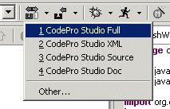

CVS SynchronizationNote: This feature is not available under Eclipse 3.0 and above  The standard Application Developer/Eclipse CVS synchronize commands are very manually intensive and cumbersome to use. If you want to synchronize a large number of items (possibly across multiple projects), you are forced to control/shift-click each item, select the "Team | Synchronize with Stream" command, wait for the analysis to take place and then manually catch up and release any items that have changed. CodePro adds a number of enhanced, fast-path synchronize options based on working sets. Working sets are simply pre-defined collections of arbitrary resources. Rather than individually selecting each element every time you want to synchronize, you can define a working set representing those elements and then synchronize that set of elements with a single click. Not only do these options make it easier to specify the set of items that are synchronized, they also stream-line the actual synchronization process. Updated resources are automatically either released or caught up as necessary with the results shown in a simple details dialog. If no changes are detected, you will receive the standard notification to that effect. In the event of a conflict, you will be presented with the standard Team perspective Synchronize view where you can review the conflict manually. If you would prefer to always see the Synchronize view so you can catch up/release changes manually, you can configure that via a preference page.
With either, clicking on the tool bar button itself uses the working set that was last caught up/released, or opens a Resource/Working Set selection dialog, if there is no last working set. An arbitrary collection of resources may be selected on the Resources page.
A working set on the Working Set page. Clicking the "New/Browse" button opens a working set selection/creation dialog .
Clicking the drop-down arrow displays the most recently used working sets, along with an "Other..." choice that opens a working set selection/creation dialog to allow other working sets to be used or created.
You can also schedule catch up or catch up/release operations to occur at specific times (like startup or shutdown) using the Scheduler view. |